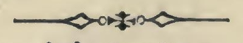
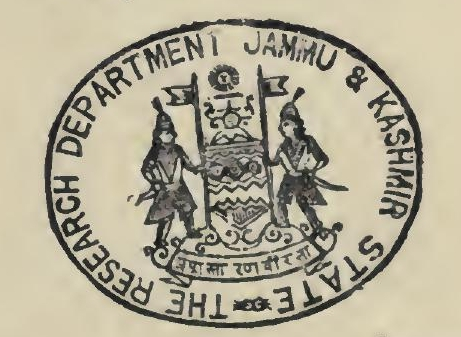

ॐ
काश्मीर - संस्कृतग्रन्थावलिः ।
ग्रन्थाङ्कः २८
श्रीतन्त्रालोकः ।

श्रीमन्महामाहेश्वराचार्यवर्य - श्रीमदभिनवगुप्ता वार्यविरचितः ।
श्रीमन्महामाहेश्वराचार्यवर्य - श्रीजयरथकृतविवेकाभिव्यटीकोपेतः ।
श्रीभारतधर्ममार्तण्ड-काश्मीरमहाराज - श्रीप्रतापसिंहप्रतिष्ठापिते
प्रत्त्रविद्याप्रकाश (रिसर्च) कार्यालये
तदध्यक्ष--पण्डित -- मधुसूदन - शास्त्रिणा
उद्दिष्टकार्यालयस्थेतरपण्डितसहायेन
संगृह्य, संशोधन - पर्यायाङ्कन विवरणादिसंस्करणोत्तरं
पाश्चात्य विद्वत्परिषत्संमताधुनिक सुगमशुद्ध रीत्युपन्यासादिसंस्कारैः परिष्कृत्य
_________
श्री मुम्बय्यां
श्रीवेंकटेश्वर प्रेस नाम्नि मुद्रणालये मुद्रापयित्वा
प्राकाश्यमुपनीतः ।
( द्वितीयो भागः )

संवत् १९७७ खैस्ताब्दः १९२०
काश्मीर श्रीनगर ।
______________________________________________________________
( अस्य ग्रन्थस्य सर्वे प्रकाशनमुद्रापणाद्यधिकाराः प्रोक्तमहाराजवयैः
स्वायत्तीकृताः सन्ति )